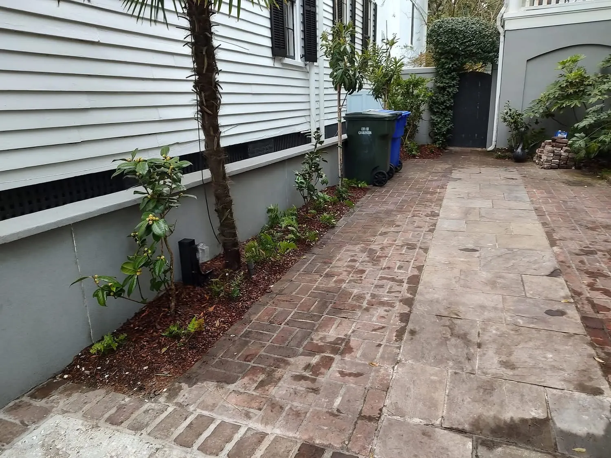
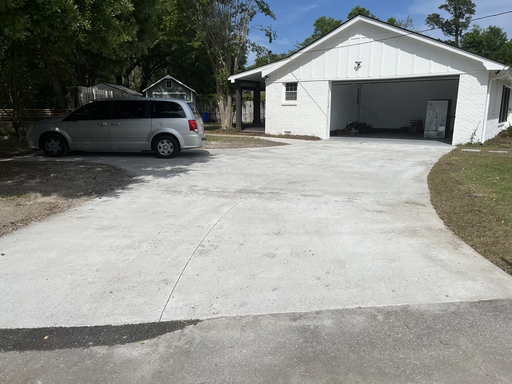
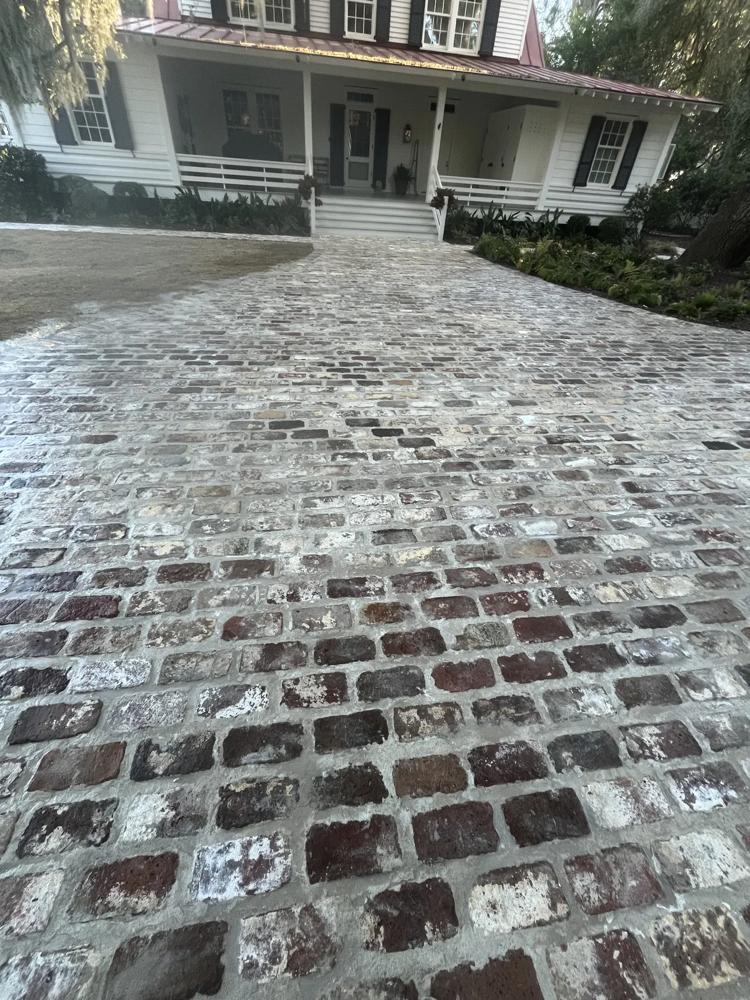

Landscape Drainage Services in Charleston, SC

Expert Landscape Drainage Services In Charleston, SC
Water problems don't solve themselves. Standing water, soggy turf, foundation damage, and landscape erosion all stem from inadequate drainage—and in Charleston, these issues worsen quickly without professional intervention.
At Cramers Landscaping, our landscape drainage services are designed to solve water problems at the root, protecting your property, preserving your landscape investment, and preventing costly damage over time. As experienced drainage landscapers in Charleston, we bring years of expertise handling complex drainage challenges across the Lowcountry.
Whether you're dealing with pooling water after storms, foundation moisture issues, or eroding landscape beds, our team delivers customized landscape drainage solutions that work—long-term.
Drainage Problems in Charleston, SC
Charleston's unique geography and climate create perfect conditions for drainage problems. Understanding these challenges is the first step toward solving them.
Clay-Heavy Soil
Charleston's clay-based soils have poor drainage characteristics. Water doesn't percolate through clay easily, leading to surface pooling and waterlogged plant roots. Clay soil also expands when wet and contracts when dry, potentially damaging foundations and hardscaping.
Low Elevation & Flat Terrain
Much of Charleston sits at or near sea level. Flat lots lack natural slope to move water away from structures. Without proper grading and drainage systems, water has nowhere to go—it simply sits.
Uneven & Compacted Lots
Construction activities, foot traffic, and aging landscapes create uneven terrain with low spots where water collects. Compacted soil from heavy equipment further reduces water infiltration, exacerbating drainage issues.
Heavy Rainfall & Storm Events
Charleston averages over 50 inches of rain annually, with intense summer thunderstorms and hurricane season bringing significant water volume in short periods. Properties without adequate landscape drainage systems are vulnerable to flooding and erosion.
Crawl Spaces & Foundation Vulnerability
Many Charleston homes have crawl spaces susceptible to moisture intrusion. Poor drainage around foundations leads to wood rot, mold, structural damage, and costly repairs. Protecting your foundation starts with proper landscape drainage.
Signs You Need Professional Drainage Services
If you notice any of the following warning signs, it's time to call drainage landscaping contractors who can assess and solve your water problems:
Standing Water After Rain
Water that remains pooled 24-48 hours after rainfall indicates serious drainage deficiencies. Even small amounts of standing water create mosquito breeding grounds, kill grass, and signal deeper problems.
Foundation Stains or Mildew
Water stains on foundation walls, white mineral deposits (efflorescence), or mildew growth indicate water is collecting against your home's foundation—a major structural concern requiring immediate attention.
Soggy Turf & Muddy Patches
Grass that remains spongy, muddy areas that persist, or sections of lawn that die back repeatedly point to subsurface drainage problems or improper grading.
Basement or Crawl Space Leaks
Water intrusion into basements or crawl spaces often stems from exterior drainage failures. If your foundation is wet inside, the problem is likely outside—and requires landscape drainage solutions to fix properly.
Sinkholes or Shifting Pavers
Erosion below the surface creates voids that cause sinkholes, settling hardscaping, or shifting paver patios and walkways. These dangerous conditions worsen over time without professional drainage intervention.
Mosquito Breeding & Pest Issues
Standing water attracts mosquitoes and other pests. Eliminating water accumulation through proper drainage landscaping makes your outdoor spaces more enjoyable and reduces health risks.
Seasonal Worsening
Drainage problems that get worse during rainy seasons or after multiple storms indicate your property can't handle water volume. Progressive deterioration will continue without landscape drainage systems designed for Charleston's rainfall patterns.
Water Remains Days After Storms
If your yard stays wet for 3-5+ days after heavy rain, your soil and drainage infrastructure can't handle the load. Professional drainage landscapers can design systems to move water efficiently off your property.
Our Landscape Drainage Solutions
Cramers Landscaping offers comprehensive landscape drainage services tailored to your property's unique challenges. We don't use one-size-fits-all solutions—every drainage system we install is engineered for your specific site conditions.

French Drains
French drains are the gold standard for subsurface water management. These perforated pipe systems capture groundwater and redirect it away from problem areas.
What French Drains Do: French drains collect water that accumulates below the surface and channel it to safe drainage points away from structures and landscapes.
When French Drains Are Used:
- Along foundation perimeters to prevent basement/crawl space moisture
- In low-lying areas where water naturally collects
- Behind retaining walls to relieve hydrostatic pressure
- Along property lines to intercept water flowing from neighboring lots
- In planting beds that remain waterlogged
Why French Drains Work in Charleston: French drains handle Charleston's clay soils and high water tables effectively by providing an underground pathway for water that can't percolate naturally. Properly installed French drains with appropriate gravel bedding and filter fabric prevent clogging and provide decades of reliable performance.

Catch Basins & Yard Drains
Catch basins collect surface water at low points and funnel it into underground drainage pipes leading to discharge areas.
What Catch Basins Do: These grated collection points capture pooling surface water and direct it into underground drainage systems, preventing large-scale standing water issues.
When Catch Basins Are Used:
- At the bottom of slopes or swales
- In low areas of lawns where water naturally flows
- Near downspout discharge points
- In parking areas, driveways, or walkways prone to flooding
- At yard drainage problem spots identified during site evaluation
Why Catch Basins Work in Charleston: Charleston's flat terrain and clay soils make catch basins essential for capturing water before it pools or damages landscapes. Strategic placement intercepts water flow and prevents erosion.

Downspout Drainage Extensions
Roof runoff is a major contributor to foundation and landscape drainage problems. Downspout extensions move this water safely away from your home.
What Downspout Extensions Do: Instead of dumping water directly at your foundation, downspout drainage systems channel roof runoff through underground pipes to safe discharge points.
When Downspout Extensions Are Used:
- When downspouts currently terminate near foundations
- To prevent erosion from roof runoff
- When gutters overflow or create pooling near homes
- As part of comprehensive foundation waterproofing
- To integrate roof water into larger landscape drainage systems
Why Downspout Extensions Work in Charleston: Charleston's heavy rainfall means roof runoff volume can quickly overwhelm the area around foundations. Buried downspout extensions eliminate this concentrated water source and protect your home's structure.

Channel Drains (Patios & Driveways)
Channel drains (also called trench drains) are linear drainage systems installed in hardscapes to collect sheet flow water.
What Channel Drains Do: These long, narrow drains with grates on top intercept water flowing across patios, driveways, pool decks, or walkways, preventing flooding and water damage.
When Channel Drains Are Used:
- At the base of sloped driveways
- Between patios and homes to intercept water
- Around pool decks and outdoor living areas
- At garage entries to prevent water intrusion
- In high-traffic hardscape areas prone to flooding
Why Channel Drains Work in Charleston: Hardscaped areas are impermeable—water can't absorb through concrete or pavers. Channel drains provide the only escape route for water flowing across these surfaces, critical for Charleston's intense storms.

Sump Pump Systems
For properties with significant water collection or high water tables, sump pump systems provide active water removal.
What Sump Pump Systems Do: Collection basins (sump pits) capture water from French drains and yard drains. When water reaches a certain level, a sump pump activates and discharges water away from the property.
When Sump Pump Systems Are Used:
- Properties with high water tables or persistent groundwater
- Locations where gravity drainage isn't feasible
- Basements or crawl spaces with chronic moisture
- Low-elevation properties where water has nowhere to go naturally
- Areas requiring active water removal during heavy storms
Why Sump Pump Systems Work in Charleston: Some Charleston properties can't rely on gravity drainage alone due to elevation. Sump pumps provide mechanical water removal when passive drainage isn't sufficient.
How Drainage Protects Your Home & Landscape
Professional landscape drainage services deliver benefits far beyond eliminating standing water. Proper drainage systems protect your largest investments—your home and landscape.
Foundation Protection
Water pooling near foundations causes hydrostatic pressure against basement and crawl space walls, leading to cracks, leaks, and structural damage. Effective landscape drainage and grading systems direct water away from foundations, preserving structural integrity and preventing costly repairs.
Hardscape Preservation
Patios, walkways, retaining walls, and driveways deteriorate rapidly when subjected to water infiltration and erosion. Hardscape installations require proper drainage to prevent settling, cracking, and premature failure. Our drainage landscaping contractors integrate drainage solutions with hardscape projects to ensure longevity.
Plant Health & Landscape Vitality
Waterlogged soil suffocates plant roots, causing dieback and disease. Conversely, areas with rapid drainage may dry out excessively. Balanced landscape drainage systems maintain optimal soil moisture, supporting healthy lawns, shrubs, and trees. Our landscape installation services always include drainage considerations.
Erosion Prevention
Water flow erodes soil, damages beds, exposes roots, and creates gullies. Strategic drainage landscaping solutions slow and redirect water, preventing erosion and protecting your property's topsoil and established plantings.
Mosquito & Pest Control
Eliminating standing water removes breeding habitat for mosquitoes and other pests, making your outdoor spaces healthier and more enjoyable during Charleston's long outdoor living season.
Why Hire a Landscape Drainage Contractor
Effective drainage isn't a DIY project—it requires expertise, equipment, and engineering to solve problems permanently.
Proper Diagnosis
Drainage problems have multiple potential causes. Professional drainage landscapers assess your entire property—soil type, grading, water flow patterns, and existing infrastructure—to identify root causes, not just symptoms.
Engineered Solutions
Effective landscape drainage systems require proper pipe sizing, slope calculations, placement, and materials. Our team engineers solutions based on Charleston's soil conditions, rainfall patterns, and your property's unique characteristics.
Specialized Equipment
Installing French drains, catch basins, and drainage pipes requires excavation equipment, laser levels, pipe cutters, and compaction tools. Professional drainage landscaping contractors have the equipment to complete installations correctly and efficiently.
Code Compliance
Charleston has regulations governing drainage, stormwater management, and discharge. Our landscape drainage contractor team ensures all work complies with local codes and HOA requirements.
Long-Term Results
DIY drainage attempts often fail because they don't address underlying issues or use improper materials and techniques. Professional landscape drainage solutions are built to last, protecting your investment for decades.
Warranty & Support
We stand behind our work. If drainage issues persist after installation, we return to evaluate and adjust until your system performs as designed.

Landscape Drainage & Grading Work Together
Drainage and grading are inseparable. Even the best drainage systems fail without proper slope. Our landscape drainage and grading services work in tandem to:
- Establish positive slope away from structures
- Direct water to collection points and drainage systems
- Prevent pooling in low areas
- Prepare sites for landscaping and hardscaping
- Create natural water flow paths across your property
By addressing both drainage and grading together, we solve water problems comprehensively—not just temporarily.
Drainage Services Across Grading Services Across Charleston & the Lowcountry
Cramers Landscaping provides professional landscape drainage services throughout Charleston and surrounding communities:
We understand Lowcountry soil, climate, and drainage challenges, and we engineer systems specifically for Charleston's unique conditions.
Frequently Asked Questions
How much do landscape drainage services cost?
Landscape drainage costs vary based on problem severity, solution complexity, and property size. Simple French drain installations may cost $2,000-$5,000, while comprehensive drainage systems with multiple catch basins, extensive piping, and grading can range from $5,000-$15,000+. We provide detailed estimates after evaluating your property.
How long does drainage installation take?
Most landscape drainage projects take 2-5 days depending on scope. Small French drain installations can be completed in 1-2 days, while complex systems requiring extensive excavation and grading may take a week or more.
Will drainage damage my yard?
We minimize disruption during installation, but excavation is necessary. We restore disturbed areas with sod or seed and ensure your landscape looks better than before—with the added benefit of proper drainage. Temporary disturbance prevents permanent damage from ongoing water problems.
Do I need grading for drainage to work?
In most cases, yes. Proper slope is essential for water to flow to drainage collection points. Our landscape grading services work in conjunction with drainage installations to ensure water moves correctly across your property.
Can drainage permanently fix standing water?
When properly designed and installed, yes. Professional landscape drainage systems eliminate standing water permanently by providing pathways for water to escape your property. We engineer solutions based on your property's water volume and flow patterns.
What areas of my property need drainage?
Common problem areas include:
- Around foundations and crawl spaces
- Low-lying sections of lawns
- Behind retaining walls
- Along property lines receiving water from neighbors
- Near downspouts and roof runoff areas
- Around concrete pool decks and patios
Our team performs comprehensive site assessments to identify all drainage needs.
How do you prevent drainage pipes from clogging?
We use quality materials including properly sized gravel, filter fabric, and perforated pipe designed for drainage applications. Regular maintenance (clearing catch basin grates and inspecting discharge points) keeps systems flowing freely for decades.
Can you fix drainage for existing landscapes?
Absolutely. We retrofit drainage solutions into established landscapes with minimal disturbance. Our team carefully excavates, installs drainage infrastructure, and restores landscaping to maintain your property's appearance.
Request Free Drainage Consultation
Don't wait until standing water causes foundation damage, landscape loss, or structural problems. Let Cramers Landscaping assess your property and design a customized landscape drainage solution that protects your home and landscape investment.
Call us at (843) 614-9773 or request a consultation to schedule your free drainage evaluation today.
Our experienced drainage landscapers will visit your property, identify problem areas, and provide a detailed estimate for professional landscape drainage services.
Cramers Landscaping | Expert Landscape Drainage Solutions in Charleston, SC
Phone: (843) 614-9773
Email: dougcramerlandscaping@gmail.com
Website: cramerslandscaping.com